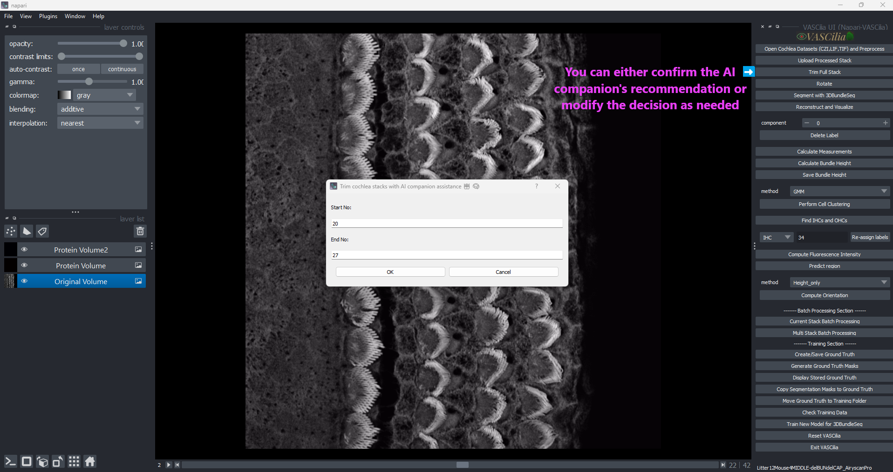

Trim Cochlea Stacks#
The Trim Cochlea Stacks feature in VASCilia enables users to refine cochlear data by selecting specific stack ranges for analysis. This process is supported by an AI-assisted companion and manual inputs, ensuring flexibility and accuracy.
Why Trimming is Important Cochlear stacks typically consist of three distinct regions:
Pre-Cellular Zone: The region preceding cellular structures.
Clear Cellular Zone: The region containing clear cellular data of interest.
Noise Cellular Zone: The region containing noise or irrelevant data.
Trimming allows users to focus on the Clear Cellular Zone, which is critical for accurate analysis, while removing unnecessary or noisy regions.
Key Features#
AI-Assisted Suggestions:
Utilizes a custom AI model to recommend start and end indices for trimming stacks.
Streamlines the process by providing initial suggestions based on stack analysis.
Interactive Dialog:
Displays a user-friendly interface for inputting or adjusting the trimming range.
Allows manual edits to fine-tune the suggested range.
Error Handling:
Ensures a minimum of two frames are trimmed for valid analysis.
Prompts users to enter valid start and end indices if inputs are missing or incorrect.
File Organization:
Creates a dedicated folder, full_stack_raw_images_trimmed, to store trimmed stacks.
Automatically copies and organizes the selected stack range into this folder.
Example Workflow#
Click the Trim Cochlea Stacks button.
Confirm or adjust the AI-suggested range in the dialog box.
Click OK to save the trimmed stack.
View the trimmed results in the full_stack_raw_images_trimmed folder.
Trim AI Prediction: Automatic Start and End Index Selection#
The Trim AI Prediction module in VASCilia assists in the automated selection of start and end indices for trimming cochlear stacks. It uses a custom deep learning model, ImprovedZSOINetModel, to classify each frame and identify the optimal range.
### Why AI Prediction is Critical The AI model ensures accurate identification of the Clear Cellular Zone, avoiding both pre-cellular and noise cellular regions. This enhances the quality and precision of subsequent analysis.
Key Components#
Deep Learning Model: ImprovedZSOINetModel:
Five convolutional layers (Conv2d) with batch normalization and ReLU activation.
Max pooling layers to reduce spatial dimensions.
Two fully connected layers for classification with dropout for regularization.
Supports up to three classes for classification, customizable via nb_classes.
Prediction Workflow:
Processes each stack frame and predicts its class:
Resizes images to 256x256.
Converts them to tensors.
Normalizes pixel values to a mean of 0.5 and a standard deviation of 0.5.
Applies softmax to generate probabilities and selects the class with the highest probability.
Index Range Detection:
Identifies the longest continuous block of valid frames (class 1).
Determines the start and end indices for this block.
Model Integration:
Pre-trained model: best_model_ZSOI_ImprovedZSOINetModel_alldata.pth.
Loaded during execution in evaluation mode for inference.
Workflow and Usage#
Image Preprocessing:
Each image is resized, normalized, and converted to a tensor before being passed to the model.
Batch Prediction:
Classifies all stack frames using the trained model.
Predictions are stored in a dictionary mapping filenames to predicted classes.
Index Detection:
Scans predictions to find the longest consecutive block of valid frames.
Returns the starting and ending indices of this block.
Output:
Provides start and end indices to the trimming module for further processing.
Practical Considerations#
Model Requirements:
Ensure the pre-trained model is available in the model_ZFT_prediction directory.
Model filename: best_model_ZSOI_ImprovedZSOINetModel_alldata.pth.
Extending the Functionality#
To add or modify functionality, edit the following files:
trim_cochlea_action.py
trim_AI.py
—
